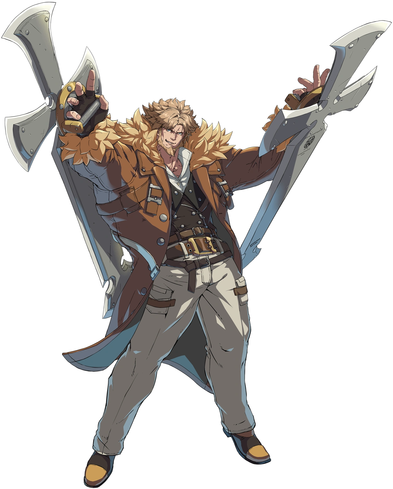

Regras Oficiais – Guilty Gear Clash 2025
1. Jogo e Plataforma
Jogo: Guilty Gear -Strive- (última atualização oficial disponível até o dia do evento)
Plataforma oficial: PlayStation 5
Controles permitidos: Arcade sticks, gamepads, hitboxes, leverless e outros controles que não
ofereçam vantagens desleais. Macros são permitidos apenas para funções existentes no jogo (ex.:
"Dash" ou "Roman Cancel"). Macros externos ou modificações de hardware são proibidos.
2. Formato de Torneio
Sistema: Double Elimination (eliminação dupla)
Rounds: Melhor de 3 partidas (FT2) em todas as fases, exceto:
Top 8: Melhor de 5 partidas (FT3)
Final (Grand Finals): Melhor de 5, com reset de bracket se o jogador vindo da repescagem (Losers)
vencer o primeiro set.
3. Regras de Partida
Timer: 99 segundos
Estágios Permitidos: Random (exceto Stages que causem problemas de desempenho ou visibilidade, como
Severed Isle e L'oro Di Illyria; esses serão removidos da rotação)
Personagens liberados: Todos os personagens disponíveis no jogo no dia do evento, incluindo DLCs.
Escolha de personagem:
O jogador no lado 1 (Player 1) escolhe seu personagem primeiro.
O jogador no lado 2 (Player 2) pode escolher o personagem após saber a escolha de Player 1, se assim
desejar.
Troca de personagem: Permitida após a derrota. O vencedor deve manter o personagem escolhido.
Controle desconectado: Se um controle sem fio interferir na partida, o jogador responsável será
desclassificado da rodada.
4. Conduta e Penalidades
Pausa durante a partida: Proibida, exceto em caso de problemas técnicos ou acordo mútuo. Pausas não
autorizadas resultam em perda automática da rodada.
Uso de Macros, Scripts ou Ferramentas Externas: Proibido. O uso pode acarretar desclassificação
imediata.
Fair Play: Comportamento antidesportivo, desrespeito a jogadores, staff ou público, ou qualquer
conduta inadequada poderá levar à desqualificação.
Puntualidade: Jogadores devem estar presentes na área de jogo 5 minutos antes do horário previsto
para sua partida. Atrasos podem levar à perda automática da partida.
5. Equipamentos e Conexões
Controle próprio: Cada jogador é responsável por trazer e testar seu controle antes da partida.
Headsets: Serão disponibilizados para partidas de Top 8. Para demais partidas, o uso de headsets
pessoais é permitido, mas o evento não fornece fones individuais para todas as estações.
6. Inscrições e Cancelamentos
Inscrição válida: Apenas após o pagamento da taxa de inscrição.
Cancelamento: Não serão reembolsadas inscrições canceladas após o prazo final (31 de julho de 2025).
Número de vagas: Limitado. Inscrições encerram-se antecipadamente caso o limite máximo seja
atingido.
7. Transmissão e Direitos de Imagem
Todas as partidas podem ser gravadas e transmitidas ao vivo.
Ao participar, o jogador autoriza o uso de sua imagem, nome e voz para divulgação do evento, sem
restrição de tempo ou formato.
8. Decisões da Organização
A organização do Guilty Gear Clash 2025 terá a palavra final em quaisquer disputas ou interpretações
das regras.
Casos não previstos neste regulamento serão resolvidos pela equipe do evento.